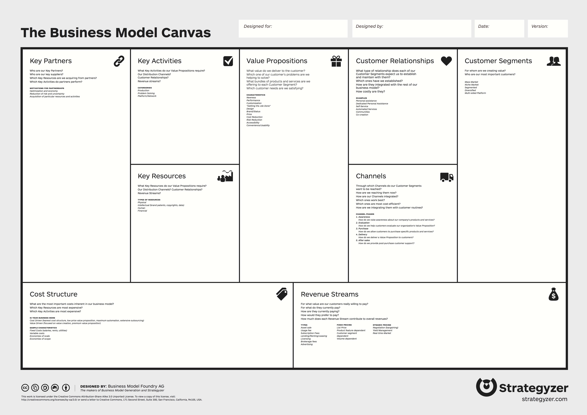

Innovation & Venture Development
How to use this guide. This paper is all MCQs, so you need to recognise details quickly, not write long answers. Each unit starts with a primer: the facts MCQ setters test, such as who coined a term, launch years, the parts of a framework, and Indian examples. Then comes a scored question bank. Tap an option to answer; the explanation says why the correct answer is right and why each distractor is wrong. The scoreboard keeps your tally, and "Reset" clears it for a second attempt.
Foundations of Innovation & Entrepreneurship
Types of innovation, the entrepreneurial mindset, India's startup ecosystem and policies, and techniques for generating ideas.
Syllabus: understanding innovation (definitions; types: product, process, frugal, business model) · role of innovation in India's growth and startup ecosystem · entrepreneurial mindset · Indian ecosystem (incubators, accelerators, government bodies, angel networks, VC) · national policies (Startup India, Digital India, AIM, Make in India) · idea generation (brainstorming, design thinking, SCAMPER)
Primer · Innovation
| Type (syllabus) | What changes | Indian example |
|---|---|---|
| Product | A new or improved good or service offered to customers | Ola Electric scooter; Paytm wallet |
| Process | A new or improved way of producing or delivering | Aravind Eye Care's assembly-line cataract surgery; Dabbawalas' coding system; UPI rails |
| Frugal | "Doing more with less": cutting cost and complexity while keeping core value, for resource-constrained users (related: Jugaad) | Jaipur Foot, Mitticool clay fridge, Godrej ChotuKool, Chandrayaan/Mangalyaan budgets, GE MAC 400 ECG |
| Business model | How value is created, delivered and captured (revenue logic) | Jio's free-voice/cheap-data model; Zerodha's zero-brokerage discount model; Ola/Uber asset-light aggregation |
Other classifications that come up: by degree: incremental (small improvements) vs radical (breakthrough); disruptive (Clayton Christensen, The Innovator's Dilemma, 1997: starts at the low end or in a new market with a "worse" but cheaper or simpler product, then moves up-market) vs sustaining (better products for existing customers); architectural (Henderson & Clark: new arrangement of existing components); open innovation (Henry Chesbrough, 2003: using external ideas and paths to market); reverse innovation (Govindarajan: developed in emerging markets and then taken to rich markets).
Primer · Role of Innovation in India
- India is the world's third-largest startup ecosystem (after the USA and China), with more than a lakh DPIIT-recognised startups and 100+ unicorns. A unicorn is a privately held startup valued at ≥ US$1 billion (term coined by Aileen Lee, 2013); a decacorn is ≥ $10 billion; a soonicorn is a likely future unicorn.
- Global Innovation Index (WIPO): India rose from 81st (2015) to around 40th (2023–24), the leading lower-middle-income economy.
- Digital public infrastructure ("India Stack"): Aadhaar, UPI, DigiLocker, ONDC, CoWIN. The JAM trinity is Jan Dhan + Aadhaar + Mobile.
- Innovation drives GDP growth, jobs (startups create jobs rather than seek them), exports (IT services, pharma: "pharmacy of the world"), and inclusion (fintech, agritech, edtech in tier-2/3 "Bharat").
Primer · The Entrepreneurial Mindset
| Trait (syllabus) | Meaning |
|---|---|
| Creativity | Generating novel, useful ideas and seeing opportunities others miss |
| Risk-taking | Calculated risk, not gambling: acting under uncertainty with limited downside |
| Problem-solving | Treating problems as opportunities; working back to root causes |
| Resilience | Recovering from failure; persistence; learning from setbacks ("fail fast, learn faster") |
Also tested: McClelland's need for achievement (nAch); internal locus of control (believing outcomes depend on your own actions); growth mindset (Carol Dweck); effectuation (Saras Sarasvathy): start from the means you have ("bird in hand"), affordable loss (not expected return), "crazy quilt" partnerships, "lemonade" (use surprises), "pilot in the plane" (control rather than predict). Intrapreneurship is entrepreneurial behaviour inside an existing firm (term popularised by Gifford Pinchot).
Primer · Indian Startup Ecosystem
| Actor | Role | Examples |
|---|---|---|
| Incubator | Nurtures early-stage / idea-stage ventures over a longer period (1–3 years): workspace, mentoring, labs, networks; often little or no equity | SINE (IIT Bombay), IIT Madras Incubation Cell, CIIE.CO (IIM Ahmedabad), T-Hub (Hyderabad), NSRCEL (IIM Bangalore), Atal Incubation Centres |
| Accelerator | Speeds up existing startups in a fixed-term cohort (3–6 months) with seed investment in exchange for equity, intense mentorship, and a Demo Day | Y Combinator (global model), Techstars, Google for Startups Accelerator India, Axilor, Surge (Peak XV) |
| Government bodies | Policy, recognition, funding, infrastructure | DPIIT (startup recognition), SIDBI (Fund of Funds), NITI Aayog/AIM, MeitY, DST (NIDHI), BIRAC (biotech), Ministry of MSME |
| Angel networks | High-net-worth individuals investing their own money at seed stage, often with mentorship | Indian Angel Network (2006), Mumbai Angels, Chennai Angels, LetsVenture (platform) |
| Venture capital | Professional funds investing pooled money (from LPs) for equity in high-growth startups, Series A onward | Peak XV (ex-Sequoia India), Accel, Blume Ventures, Nexus, Kalaari, Elevation |
Primer · National Policies
| Policy | Launched | Key facts |
|---|---|---|
| Make in India | 25 Sept 2014 | Makes India a global manufacturing hub; lion logo; "Zero Defect, Zero Effect"; initially 25 sectors; supported by PLI (Production-Linked Incentive) schemes from 2020; nodal: DPIIT |
| Digital India | 1 July 2015 | Three vision areas: digital infrastructure as a core utility, governance and services on demand, digital empowerment of citizens; nine pillars; nodal: MeitY; examples: DigiLocker, e-Hospital, BharatNet, UMANG |
| Startup India | 16 Jan 2016 | DPIIT recognition (entity ≤ 10 years old, turnover ≤ ₹100 crore in any FY, working on innovation or scalable models); 3-year income-tax holiday within the first 10 years (Sec 80-IAC, for eligible startups); self-certification for labour and environment laws; fast-tracked patents with 80% fee rebate; faster exit; Fund of Funds for Startups (₹10,000 crore, managed by SIDBI); Startup India Seed Fund Scheme (₹945 crore, 2021) |
| Atal Innovation Mission (AIM) | 2016 | Flagship under NITI Aayog; Atal Tinkering Labs (schools, grades 6–12), Atal Incubation Centres, Atal New India Challenges, Atal Community Innovation Centres, ARISE (MSMEs) |
Primer · Idea Generation
| Technique | Key facts |
|---|---|
| Brainstorming | Alex Osborn (Applied Imagination, 1953). Rules: defer judgement, go for quantity, welcome wild ideas, combine and build on others' ideas. Variants: brainwriting (6-3-5), reverse brainstorming, mind mapping. |
| Design thinking | Human-centred problem solving (IDEO / Stanford d.school). Five stages: Empathise → Define → Ideate → Prototype → Test, iterative, not linear. Double Diamond (UK Design Council): Discover, Define, Develop, Deliver. The "sweet spot" balances desirability, feasibility and viability. |
| SCAMPER | Checklist by Bob Eberle (1971), built on Osborn's questions: Substitute · Combine · Adapt · Modify (magnify/minify) · Put to other uses · Eliminate · Reverse/Rearrange |
Question Bank · Unit I
Which economist described innovation as "new combinations" and introduced the idea of "creative destruction"?
- Peter Drucker
- Clayton Christensen
- Joseph Schumpeter
- Michael Porter
The key difference between invention and innovation is that innovation:
- Must always be patented
- Involves the successful commercial or social application of an idea
- Is always a physical product
- Happens only in R&D laboratories
Aravind Eye Care's high-volume, assembly-line approach to cataract surgery, which cuts cost per operation dramatically, is primarily an example of:
- Process innovation
- Product innovation
- Radical technological innovation
- Open innovation
"Doing more with less", developing affordable solutions for resource-constrained customers by reducing cost and complexity, describes:
- Sustaining innovation
- Architectural innovation
- Luxury innovation
- Frugal innovation
Which of these is the best example of business model innovation?
- A faster processor chip
- A new flavour of biscuit
- Zerodha charging zero brokerage on equity delivery trades and earning through other fees
- A factory installing robotic welding arms
According to Clayton Christensen, disruptive innovations typically:
- Begin by serving the most demanding, high-end customers
- Start at the low end or in new markets with simpler, cheaper offerings and later move up-market
- Are always based on breakthrough science
- Are launched mainly by market leaders
The concept of "open innovation", using external as well as internal ideas and paths to market, was popularised by:
- Henry Chesbrough
- Alex Osborn
- Eric Ries
- Steve Blank
A "unicorn" startup is one that is:
- Profitable within its first year
- Listed on a stock exchange with a valuation of ₹1,000 crore
- Founded by a single founder
- Privately held and valued at US$1 billion or more
In terms of number of startups, India's ecosystem is generally ranked:
- First in the world
- Third, after the USA and China
- Tenth
- Fifth, after the USA, China, UK and Israel
The "JAM trinity" that underpins much of India's digital innovation stands for:
- Jobs, Apprenticeship, Manufacturing
- Justice, Access, Mobility
- Jan Dhan, Aadhaar, Mobile
- Joint ventures, Angels, Mentors
An entrepreneur's willingness to take risks is best described as:
- Taking calculated risks after assessing possible losses
- Gambling on outcomes with no information
- Avoiding all uncertainty
- Transferring every risk to investors
The entrepreneurial trait of bouncing back from failures and setbacks is called:
- Creativity
- Locus of control
- Need for affiliation
- Resilience
An entrepreneur who believes that success depends mainly on their own actions rather than luck has:
- External locus of control
- Internal locus of control
- Fixed mindset
- High need for power
Saras Sarasvathy's effectuation principle of "affordable loss" means an entrepreneur:
- Invests only when the expected return is highest
- Borrows as much as possible to maximise upside
- Decides based on how much they can afford to lose, not on predicted returns
- Avoids partnerships to limit losses
Which is the most accurate distinction between an incubator and an accelerator?
- Incubators nurture early-stage ideas over a longer, flexible period; accelerators run fixed-term cohorts for existing startups, usually taking equity and ending with a Demo Day
- Incubators always take more equity than accelerators
- Accelerators only work with non-profit ventures
- There is no difference; the terms are synonyms
High-net-worth individuals who invest their own money in very early-stage startups, often also mentoring them, are called:
- Venture capitalists
- Private equity firms
- Commercial bankers
- Angel investors
The Indian Angel Network (IAN) was founded in:
- 1991
- 2006
- 2016
- 2020
Which government body grants "startup recognition" in India under the Startup India initiative?
- Reserve Bank of India
- SEBI
- DPIIT (Department for Promotion of Industry and Internal Trade)
- NABARD
Startup India was launched on:
- 16 January 2016
- 25 September 2014
- 1 July 2015
- 15 August 2018
Under DPIIT's definition, an entity can be recognised as a startup if, among other conditions, its annual turnover has not exceeded:
- ₹10 crore
- ₹25 crore
- ₹50 crore
- ₹100 crore
The ₹10,000 crore "Fund of Funds for Startups" (FFS) under Startup India is managed by:
- NITI Aayog
- SIDBI
- State Bank of India
- IFCI
The Atal Innovation Mission (AIM) is housed under:
- Ministry of Finance
- Ministry of Education
- NITI Aayog
- Ministry of External Affairs
Atal Tinkering Labs (ATLs) are set up in:
- Schools, to nurture curiosity and innovation among students of grades 6–12
- Only IITs and IIMs
- Defence research laboratories
- Rural panchayat offices
"Zero Defect, Zero Effect" and a lion made of cogs are associated with:
- Digital India
- Startup India
- Skill India
- Make in India
Which is not one of the three vision areas of Digital India?
- Digital infrastructure as a core utility to every citizen
- Production-linked incentives for electronics exports
- Governance and services on demand
- Digital empowerment of citizens
The nodal ministry for Digital India is:
- Ministry of Commerce & Industry
- Ministry of Communications only
- Ministry of Electronics and Information Technology (MeitY)
- Ministry of Home Affairs
Which of the following is a benefit available to DPIIT-recognised startups?
- Income-tax exemption for 3 consecutive years out of the first 10 years (subject to eligibility under Sec 80-IAC)
- Permanent exemption from GST
- Guaranteed government contracts
- Automatic listing on the NSE
The four basic rules of brainstorming proposed by Alex Osborn include all of the following EXCEPT:
- Defer judgement
- Go for quantity
- Encourage wild ideas
- Evaluate each idea immediately to save time
In the Stanford d.school design-thinking model, the FIRST stage is:
- Define
- Empathise
- Ideate
- Prototype
In design thinking, a "point-of-view" or problem statement is created during the:
- Empathise stage
- Test stage
- Define stage
- Prototype stage
The three lenses that good design-thinking solutions should balance are:
- Desirability, feasibility, viability
- Speed, cost, quality
- Price, product, place
- Strengths, weaknesses, opportunities
In SCAMPER, the letter "P" stands for:
- Prototype
- Pivot
- Price
- Put to other uses
A company adds a camera to a mobile phone. Which SCAMPER prompt does this best illustrate?
- Eliminate
- Combine
- Reverse
- Substitute
The SCAMPER technique was developed by:
- Tim Brown
- Edward de Bono
- Bob Eberle, building on Alex Osborn's checklist
- Alexander Osterwalder
Mansukhbhai Prajapati's "Mitticool", a clay refrigerator that needs no electricity, is a celebrated example of:
- Frugal (grassroots) innovation
- Disruptive platform innovation
- Luxury product innovation
- Financial innovation
"Jugaad" in the Indian innovation context most closely means:
- A formal R&D process with patents
- Imitation of foreign products
- A government subsidy
- An improvised, flexible, low-cost fix made with limited resources
Which Indian initiative gave rise to UPI, DigiLocker and Aadhaar-based e-KYC, together called "India Stack"?
- Make in India
- Digital India / digital public infrastructure
- Atal Innovation Mission
- Skill India
Innovation developed first for emerging markets and later adopted in developed markets is called:
- Sustaining innovation
- Incremental innovation
- Reverse innovation
- Closed innovation
Which is the best description of a venture capital (VC) firm?
- A fund manager investing pooled money from limited partners into high-growth startups in exchange for equity
- A bank giving collateral-backed working-capital loans
- A government grant agency
- An individual investing personal savings in friends' businesses
The Startup India Seed Fund Scheme (SISFS, 2021) mainly provides:
- Loans to large corporations
- Subsidies for farmers
- Tax refunds on exports
- Early-stage funding for proof of concept, prototypes, product trials and market entry, disbursed through eligible incubators
In the entrepreneurial mindset, "problem-solving" as an opportunity lens means:
- Avoiding markets with problems
- Waiting for government to fix problems
- Treating customer pain points as potential business opportunities and working to their root causes
- Solving only technical coding problems
Which pair correctly matches an Indian incubator with its host institution?
- SINE – IIM Ahmedabad
- CIIE.CO – IIM Ahmedabad
- T-Hub – IIT Delhi
- NSRCEL – IIT Kharagpur
Flashcards · Unit I
Quick facts for recall.
Opportunity Identification & Business Model Development
Sizing a market, testing a problem with real customers, building and learning lean, designing the business model, and choosing how to earn revenue in India.
Syllabus: market opportunity analysis in the Indian context · problem-solution fit and customer discovery · lean startup methodology · Business Model Canvas & Value Proposition Canvas · revenue models (freemium, subscription, marketplace, direct sales) · social entrepreneurship and frugal innovation in India
Primer · Market Opportunity Analysis
Top-down sizing starts from an industry total and narrows down; bottom-up sizing multiplies (number of target customers × price × purchase frequency). Bottom-up is more credible to investors. Frameworks: PESTEL (Political, Economic, Social, Technological, Environmental, Legal), Porter's Five Forces (rivalry, threat of new entrants, threat of substitutes, buyer power, supplier power), SWOT, and competitor mapping.
Indian-context factors: high price sensitivity and value-seeking; a large young population; "India 1 / India 2 / India 3" consumer layers (from the Blume Indus Valley reports: a small affluent layer, a larger aspiring layer, and a vast layer with limited spending power); tier-2/3 "Bharat" growth; vernacular-first internet users; UPI and cheap data (Jio effect since 2016); cash-on-delivery culture; fragmented distribution (kirana stores); regulatory diversity across states.
Primer · Problem-Solution Fit & Customer Discovery
Steve Blank's Customer Development (The Four Steps to the Epiphany): Customer Discovery → Customer Validation → Customer Creation → Company Building. Motto: "Get out of the building". "No business plan survives first contact with customers." Customer discovery turns founders' hypotheses into facts through interviews: Is the problem real, frequent and painful? Who has it? How do they solve it today? Rob Fitzpatrick's The Mom Test: ask about past behaviour, not opinions of your idea.
| Fit stage | Question answered | Evidence |
|---|---|---|
| Problem-solution fit | Does a real problem exist, and does our solution address it? | Interviews, landing-page sign-ups, pre-orders |
| Product-market fit (Marc Andreessen: "being in a good market with a product that can satisfy that market") | Do enough customers want, use and pay for it? | Retention curves flattening, organic growth, Sean Ellis test (≥ 40% "very disappointed" without it) |
| Business-model / scale fit | Can we acquire customers profitably? | LTV : CAC ≥ 3, payback period |
Primer · Lean Startup
Eric Ries, The Lean Startup (2011), built on Blank's customer development and Toyota's lean manufacturing. Core ideas:
- Build → Measure → Learn feedback loop, as fast as possible (plan it in reverse: decide what to learn, then what to measure, then what to build).
- MVP (Minimum Viable Product): the version with the least effort that allows a full turn of the loop and gives validated learning. Types: concierge MVP (manual service), Wizard-of-Oz MVP (looks automated, humans behind it), landing-page / smoke-test MVP, explainer-video MVP (Dropbox).
- Validated learning: learning backed by real customer data, not opinion.
- Pivot or persevere: a pivot is a structured course correction to test a new hypothesis (zoom-in, zoom-out, customer-segment, platform, business-architecture, channel pivots…).
- Innovation accounting and actionable vs vanity metrics (total sign-ups is a vanity metric; cohort retention is actionable). A/B testing, the "five whys".
Primer · Business Model Canvas & Value Proposition Canvas

| Block | Question | Swiggy example |
|---|---|---|
| Customer Segments | For whom do we create value? | Urban diners; restaurants; delivery partners (multi-sided) |
| Value Propositions | What value do we deliver? | Wide choice, fast delivery, live tracking; demand for restaurants |
| Channels | How do we reach customers? | App, website, notifications |
| Customer Relationships | What relationship does each segment expect? | Self-service + support chat; Swiggy One loyalty |
| Revenue Streams | How do we earn? | Restaurant commission, delivery fees, subscriptions, ads |
| Key Resources | What assets are essential? | Platform tech, data, fleet network, brand |
| Key Activities | What must we do well? | Logistics optimisation, onboarding, marketing |
| Key Partnerships | Who helps us? | Restaurants, payment gateways, cloud providers |
| Cost Structure | What are the main costs? | Delivery payouts, discounts, tech, marketing |
Value Proposition Canvas (Osterwalder et al., Value Proposition Design, 2014) zooms into two BMC blocks. The Customer Profile (circle) has Customer Jobs, Pains and Gains. The Value Map (square) has Products & Services, Pain Relievers and Gain Creators. Fit is achieved when pain relievers and gain creators match the most important pains and gains.
Primer · Revenue Models for Indian Markets
| Model | How it earns | Indian examples | Watch-outs |
|---|---|---|---|
| Freemium | Free basic tier; paid premium features (conversion typically 2–5%) | JioSaavn, Canva, Zoho, LinkedIn, Truecaller | Free users cost money; needs a strong upgrade trigger |
| Subscription | Recurring fee for ongoing access (monthly or annual) | Netflix/JioHotstar, Zomato Gold, Swiggy One, SaaS (Freshworks) | Churn; Indian price sensitivity leads to low-price or sachet plans |
| Marketplace | Commission or "take rate" on transactions between buyers and sellers; listing fees; ads | Flipkart, Meesho, Swiggy/Zomato, Urban Company, OLX | Chicken-and-egg liquidity problem; disintermediation |
| Direct sales / D2C | Sell own products directly (online or own stores), keeping the full margin | boAt, Mamaearth, Lenskart, Sugar Cosmetics | High customer-acquisition cost; inventory risk |
Also recognise: advertising, transaction or convenience fees (payments), licensing, pay-per-use, "sachet" pricing (small, affordable units, e.g. ₹1 shampoo sachets, small data packs). Key metrics: CAC (customer acquisition cost), LTV/CLV (lifetime value), ARPU, churn, GMV (gross merchandise value, for marketplaces).
Primer · Social Entrepreneurship & Frugal Innovation in India
Social entrepreneurship applies entrepreneurial methods to social or environmental problems, measuring success by impact as well as, or instead of, profit. Triple bottom line (John Elkington, 1994): People, Planet, Profit. The term "social entrepreneur" was popularised by Bill Drayton (founder of Ashoka, 1980). Muhammad Yunus (Grameen Bank, microfinance, Nobel Peace Prize 2006) developed the "social business" idea. Forms in India: non-profit (Section 8 company, trust, society), for-profit social enterprise, cooperative, hybrid.
| Venture | Founder | Impact |
|---|---|---|
| SELCO India | Harish Hande | Solar energy for rural poor with doorstep financing |
| Goonj | Anshu Gupta | Urban surplus material used for rural development ("Cloth for Work") |
| Amul (cooperative) | Verghese Kurien | White Revolution; farmer-owned dairy value chain |
| Aravind Eye Care | Dr G. Venkataswamy | Cross-subsidised, high-volume, low-cost eye surgery |
| Barefoot College | Bunker Roy | Rural women trained as solar engineers |
| Akshaya Patra | ISKCON Bengaluru | Mid-day meals at scale |
| Jaipur Foot (BMVSS) | D.R. Mehta / P.K. Sethi | Low-cost prosthetic limb, fitted free |
Question Bank · Unit II
The portion of the total market that a startup can realistically capture in the near term is called:
- TAM
- SAM
- SOM
- GMV
Estimating market size by multiplying the number of target customers × price × purchase frequency is:
- Bottom-up sizing
- Top-down sizing
- PESTEL analysis
- Porter's Five Forces
In PESTEL analysis, the "L" stands for:
- Logistical
- Local
- Labour
- Legal
Which is NOT one of Porter's Five Forces?
- Threat of new entrants
- Government subsidies
- Bargaining power of buyers
- Threat of substitutes
A feature that especially distinguishes consumer markets in India is:
- Uniformly high disposable income
- Negligible use of digital payments
- High price sensitivity combined with rapid digital adoption in tier-2/3 cities
- A single common language across all users
Steve Blank's customer development process has four steps. The correct order is:
- Customer discovery → customer validation → customer creation → company building
- Company building → customer creation → customer discovery → customer validation
- Customer validation → customer discovery → scaling → exit
- Ideation → prototyping → testing → launch
"Get out of the building" is advice to founders to:
- Rent a larger office
- Work remotely
- Avoid investors until launch
- Talk to real potential customers instead of guessing their needs
"The Mom Test" (Rob Fitzpatrick) advises that during customer interviews you should:
- Ask people whether they like your idea
- Ask about their past behaviour and current problems rather than seeking compliments on your idea
- Interview only family members
- Pitch the product for the first ten minutes
Problem-solution fit is achieved when:
- The company becomes profitable
- The startup raises Series A
- There is evidence that a real, significant problem exists for a customer segment and that the proposed solution addresses it
- The product is available in all Indian states
The term "product-market fit" is most associated with:
- Marc Andreessen
- Alex Osborn
- John Elkington
- Joseph Schumpeter
The Sean Ellis test suggests product-market fit when at least what share of users say they would be "very disappointed" without the product?
- 5%
- 10%
- 25%
- 40%
The Lean Startup (2011) was written by:
- Steve Blank
- Eric Ries
- Peter Thiel
- Alexander Osterwalder
The core feedback loop of the lean startup is:
- Plan → Do → Check → Act
- Empathise → Define → Ideate
- Build → Measure → Learn
- Attention → Interest → Desire → Action
A Minimum Viable Product (MVP) is best defined as:
- The version of a product that allows a team to collect the maximum validated learning about customers with the least effort
- The cheapest possible final product
- A product with all features but lower quality
- A beta version released only to investors
Dropbox validated demand with a short video showing how the product would work, before fully building it. This is an example of:
- A concierge MVP
- Product-market fit
- A pivot
- An explainer-video MVP (smoke test)
A founder personally delivers groceries ordered over WhatsApp to 20 households to test demand before building an app. This is a:
- Wizard-of-Oz MVP
- Concierge MVP
- Freemium model
- Vanity metric
In lean startup terminology, a "pivot" is:
- Shutting down the company
- Raising a bigger funding round
- A structured course correction to test a new fundamental hypothesis about the product, strategy or growth engine
- Hiring a new CEO
Which is an actionable rather than a vanity metric?
- Week-4 retention of users who signed up in a given cohort
- Total cumulative app downloads
- Total page views since launch
- Number of social-media followers
"Innovation accounting" in lean startup refers to:
- Tax accounting for R&D expenses
- Counting patents filed
- Auditing startup books for investors
- Measuring progress through learning milestones: establish a baseline with the MVP, tune the engine, then decide to pivot or persevere
The Business Model Canvas was developed by:
- Eric Ries and Steve Blank
- Alexander Osterwalder and Yves Pigneur
- Michael Porter
- Clayton Christensen
How many building blocks does the Business Model Canvas have?
- 5
- 7
- 9
- 12
Which block sits at the centre of the Business Model Canvas?
- Value Propositions
- Customer Segments
- Key Resources
- Revenue Streams
Which BMC blocks make up the "efficiency" (left) side of the canvas?
- Channels, Customer Relationships, Customer Segments
- Revenue Streams and Value Propositions
- Customer Segments and Cost Structure
- Key Partners, Key Activities, Key Resources, Cost Structure
For Swiggy, restaurants and delivery partners as well as diners appear in the Customer Segments block. This makes it a:
- Niche market model
- Multi-sided platform
- Mass market model
- Segmented single-product model
In the Value Proposition Canvas, the customer profile consists of:
- Products, services, features
- Pain relievers, gain creators, channels
- Customer jobs, pains, gains
- Revenue, cost, profit
"Fit" in the Value Proposition Canvas is achieved when:
- Pain relievers and gain creators address the most important pains and gains of the customer profile
- The product has more features than competitors
- Revenue exceeds cost
- All nine BMC blocks are filled
In the VPC, "customer jobs" refers to:
- The employment status of customers
- Jobs the startup will create
- Tasks the company must perform
- What customers are trying to get done in their work or life: functional, social or emotional
A music app offers ad-supported free listening and an ad-free paid tier with downloads. This revenue model is:
- Marketplace
- Freemium
- Direct sales
- Licensing
The main revenue source of a marketplace such as Meesho, Flipkart or Urban Company is:
- Manufacturing margins on its own products
- Government grants
- Commission ("take rate"), listing and service fees, and advertising charged on transactions between buyers and sellers
- Interest income from customer deposits
The biggest early challenge for a new two-sided marketplace is usually:
- The chicken-and-egg problem of attracting enough buyers and sellers at the same time (liquidity)
- Holding too much inventory
- Excessive manufacturing capacity
- Patent infringement
boAt, Mamaearth and Lenskart selling their own branded products through their own websites and stores is an example of:
- Freemium
- Marketplace
- Subscription only
- Direct sales / direct-to-consumer (D2C)
The biggest risk specific to subscription businesses is:
- Inventory obsolescence
- Churn: customers cancelling their recurring plan
- Import duties
- Seasonal crop failure
A healthy startup is often expected to have an LTV : CAC ratio of about:
- 0.5 : 1
- 1 : 1
- 3 : 1 or higher
- It does not matter
"Sachet pricing", selling small, affordable units, suits Indian markets mainly because it:
- Matches low, irregular incomes and lets price-sensitive customers try or buy in small quantities
- Increases per-unit packaging efficiency
- Is required by law
- Only works for luxury goods
The "triple bottom line" concept (People, Planet, Profit) was coined by:
- Muhammad Yunus
- Bill Drayton
- C.K. Prahalad
- John Elkington
C.K. Prahalad's "Bottom of the Pyramid" (BoP) argument is that:
- The poor should be served only by charity
- The billions of low-income consumers are a large, profitable market if served with affordable, innovative business models
- Companies should focus only on luxury buyers
- Poverty cannot be reduced by business
SELCO India, founded by Harish Hande, is best known for:
- Microfinance for urban traders
- Clothing recycling
- Solar energy solutions with doorstep financing for the rural poor
- Mid-day meals
Amul is an example of which social-enterprise form?
- A farmer-owned cooperative
- A government ministry
- A foreign multinational subsidiary
- A Section 8 charity
Aravind Eye Care stays financially sustainable while treating most poor patients free or at very low cost mainly through:
- Foreign donations only
- Government ownership
- Charging all patients high fees
- Cross-subsidisation from paying patients plus high-volume, highly efficient processes
ISRO's Mars Orbiter Mission (Mangalyaan), completed for roughly ₹450 crore, is often cited as an example of:
- Luxury innovation
- Frugal engineering / frugal innovation
- Freemium pricing
- A marketplace model
A key difference between social entrepreneurship and traditional (commercial) entrepreneurship is that social entrepreneurship:
- Never earns revenue
- Is always run by the government
- Treats social or environmental impact as the primary mission, with financial sustainability as a means
- Does not require innovation
Which sequence best reflects the logical order of Unit II activities for a new venture?
- Market opportunity analysis → customer discovery (problem-solution fit) → MVP via Build–Measure–Learn → design the business model (BMC/VPC) and revenue model → scale
- Scale → MVP → customer discovery → market sizing
- Revenue model → exit → customer discovery
- Patent filing → IPO → market analysis
Flashcards · Unit II
Includes cumulative cards from Unit I (↺).